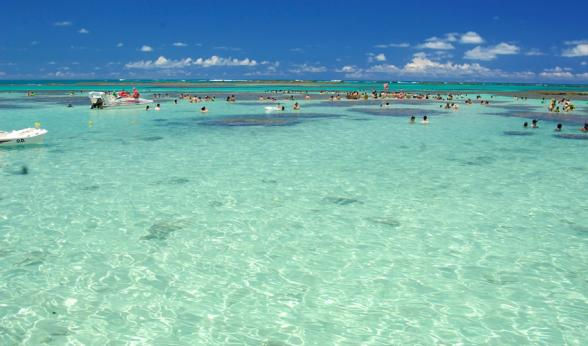

Maceio, que ver y que hacer en este paraíso brasilero
Maceio contexto
Maceió tiene una de las más bellas costas de Brasil y es una de las ciudades que mas turismo recibe. Esta belleza se debe principalmente al mar, muy similar al del Caribe, y las muchas palmeras plantadas a lo largo de la linea de costa. Aquellos que visitan la capital de Alagoas, probablemente, se desplazan en busca de las mejores playas en Maceió y buenos días de sol frente al mar; si eso es lo que esperas de tu viaje, prepárate, porque vas a encontrar mucho mas que eso. Hay muchas cosas para ver y hacer en Maceió ;la buena cocina, las artesanías, la animada vida nocturna y una atmósfera totalmente contagiosa!
Un viaje a la capital de Alagoas debe comenzar con un buen paseo en la orilla del mar, con paradas en las playas de Jatiuca (donde se puede comer las riquísimas tapiocas) y Ponta Verde, para admirar la puesta de sol. En la playa de Pajuçara, casi no hay olas, es ideal para un paseo en las piscinas naturales, bucear y descansar en el banco de arena que emerge cuando la marea esta baja.

Imagen tomada temporada 2024
Que hacer un Maceio:
Disfrutar de las Piscinas naturales
Ir a las piscinas naturales de Pajuçara con la marea baja es imprescindible y por eso es la primera recomendación de nuestra lista de qué hacer en Maceió. No obstante, te recomendamos consultar la tabla de mareas, o bien preguntar a quienes realizan el traslado para que puedas disfrutarlo más.
Con la marea baja, la barrera coralina se revela y los peces se quedan en la región, siendo un atractivo en sí mismo. El recorrido parte en balsas rústicas que tardan unos 10 minutos en llegar a las aguas cristalinas y cálidas de las piscinas naturales de Maceió.
Feria de Artesanía de Pajuçara
La Feria de Artesanías de Pajuçara es el mejor lugar en el malecón de Maceió para comprar recuerdos. La feirinha tiene muchas opciones artesanales como hamacas, remeras, ropa de encaje, imanes de heladera y juguetes hechos con madera, por ejemplo.
Casi enfrente está el Pavilhão do Artesanato, que tiene varios puestos de venta de artesanías. Además, el Pavilhão tiene ropa de playa y otros artículos que son esenciales para disfrutar de tus días de vacaciones en Maceió. Además, hay opciones culinarias como castañas y cachaças artesanales que se producen en la región.
Si querés ver más opciones de artesanías en Maceió, te recomendamos visitar el Mercado Central, con 250 tiendas. Está ubicado en el centro de la ciudad en un pabellón bien organizado y tiene precios más atractivos porque no es tan turístico.